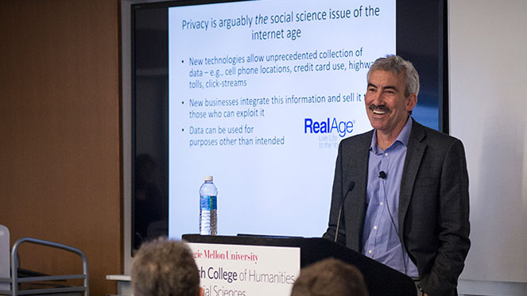
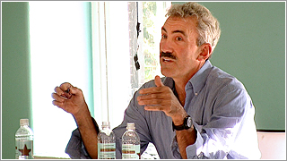
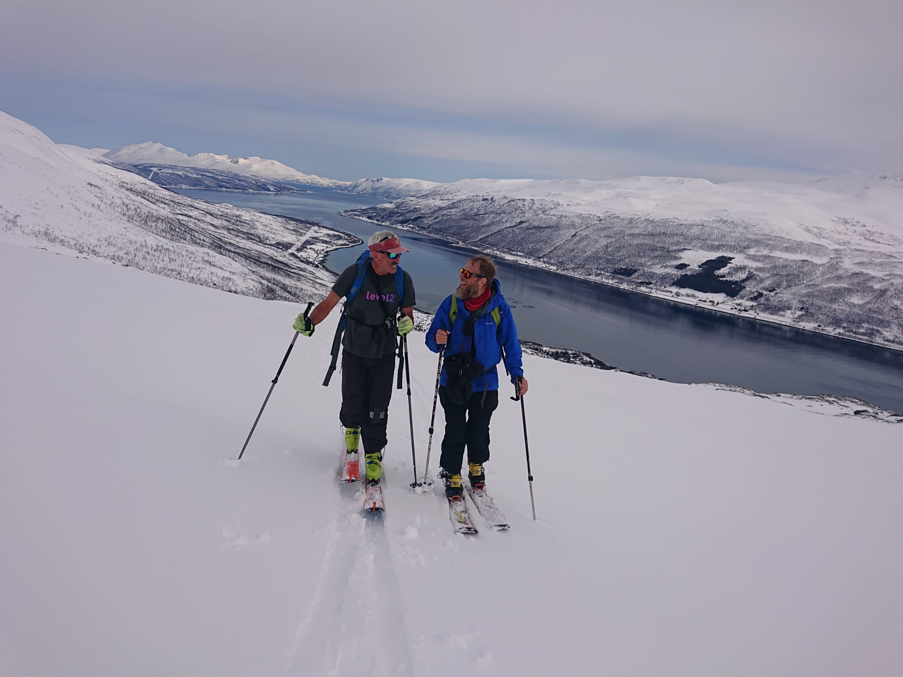

About the Author
George Loewenstein
Contact
Get in Touch
For speaking inquiries, media requests, or research collaborations.
GL20 at andrew.cmu.edu



For speaking inquiries, media requests, or research collaborations.
GL20 at andrew.cmu.edu


